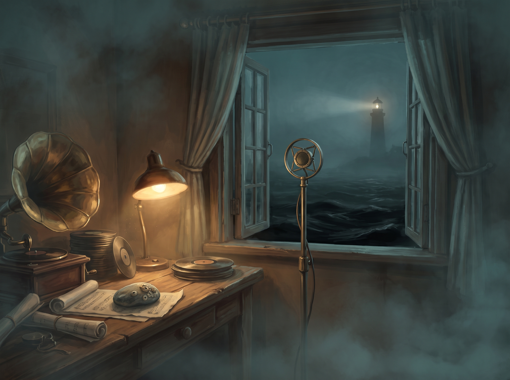
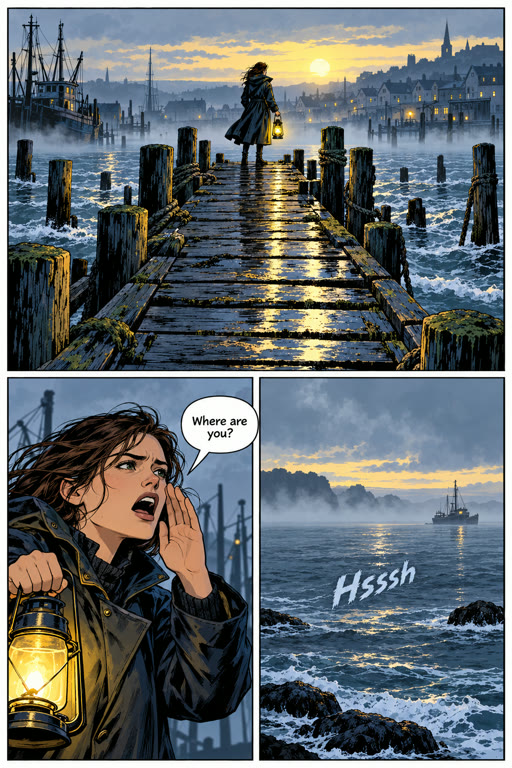
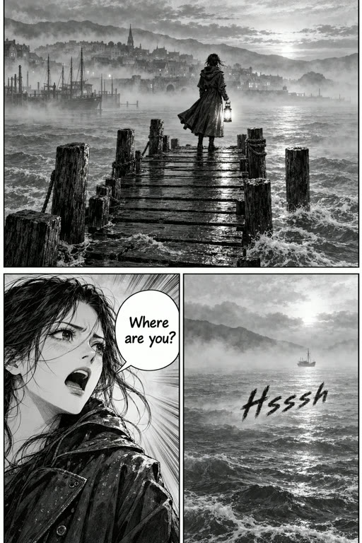
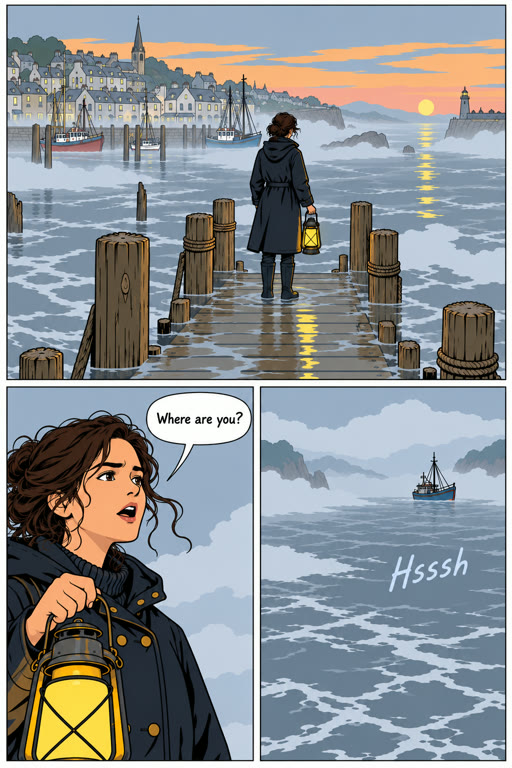
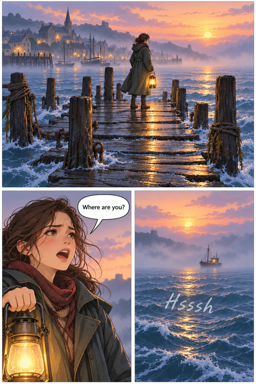
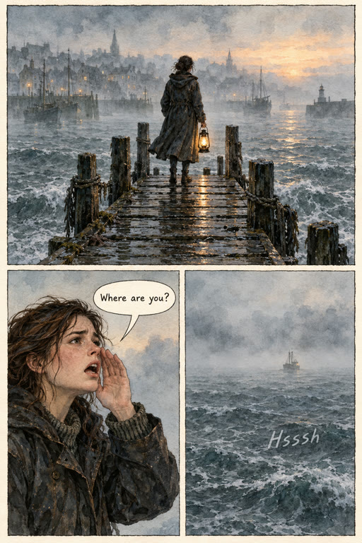
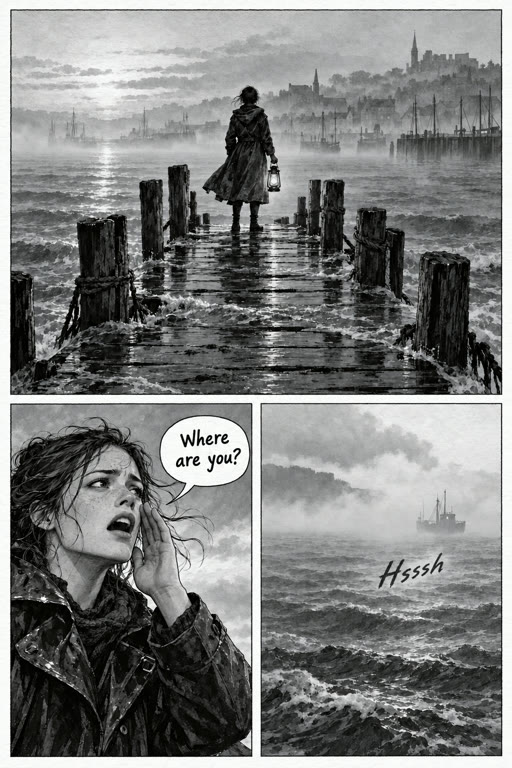
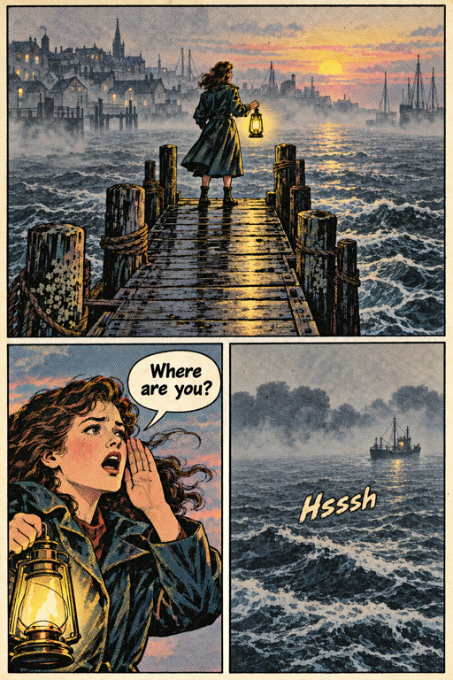

272a The door: an original book is planned with Arke too
Tell a story
What kind of story?
NovelChapters, to read.

Audio dramaEpisodes, for the ear.

Graphic novelPages, to look at.
OtherNothing assumed.
Arke can name it
Nothing · an original book

World lookThe world’s art direction

MangaBlack and white, screentone
SuperheroBold ink, four colours

Clean lineEven line, flat colour

NoirBlack, white, hard light

WebtoonSoft digital colour

PaintedBrushwork, no outline

WatercolourInk over washes

Ink and washBrush and greys

Vintage printHalftone on newsprint
Your ownDescribe it
joins Saltlight · 4 characters, every location, the whole canonBackStart emptyPlan with Arke
272b Setup: one question, a line is enough
BackSaltlightnew production
ArkeWhat happens in it? A line is enough.
Ask Arke, or change the plan…
New book
Graphic novel · original
Manga
No plan yet
272c Setup: the usual card, now with Mode
BackSaltlightnew production
A lighthouse keeper’s daughter hears a bell under the water at every low tide, and the town pretends it can’t.
ArkeMostly Maren against the town’s silence. I’d make it the usual way:
ReadingLeft to right
Page2:3 comic book
PilotChapter 1 · The bell
ModePanel by panel
Use theseChange
Ask Arke, or change the plan…
New book
Graphic novel · original
Manga
No plan yet
272d Setup: one plan, from one line
BackSaltlightnew production
A lighthouse keeper’s daughter hears a bell under the water at every low tide, and the town pretends it can’t.
ArkeMostly Maren against the town’s silence. I’d make it the usual way.
Use these.
ArkeFour chapters, starting with the bell. Bray and the weigh house have no picture yet.
Ask Arke, or change the plan…
Neap Tide
Graphic novel · original · 4 chapters · ~28 pages
MangaLeft to right2:3Pilot · chapter 1Panel by panel
1The bellShe hears it at low water. Nobody else will say so.~8 pages
2SaltThe town closes up around her question.~7 pages
3The weigh houseBray’s ledger names the night it sank.~7 pages
4NeapThe lowest tide of the year, and what is under it.~6 pages
No picture yetBrayThe weigh house
Start the pilotChange the plan